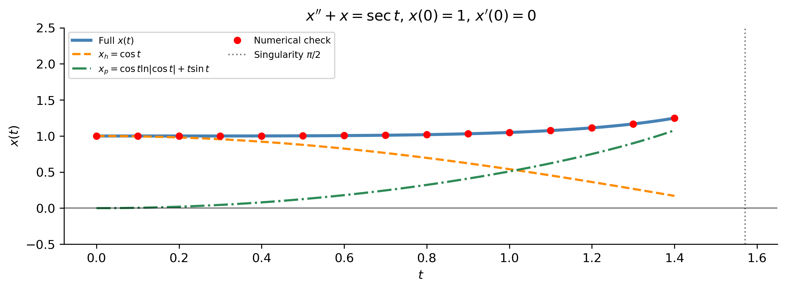
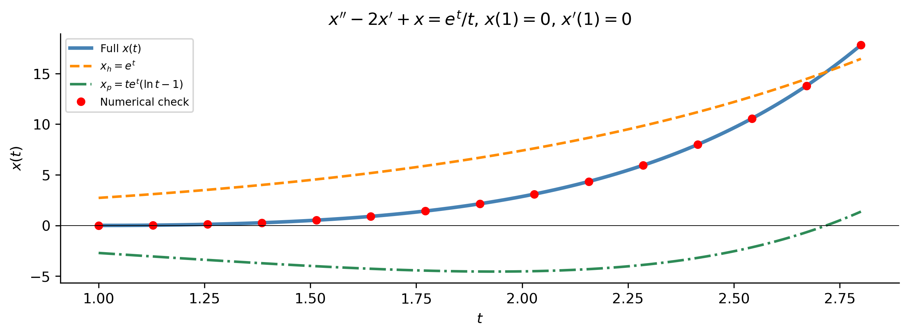
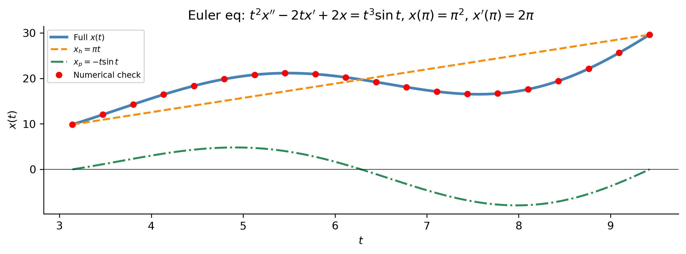
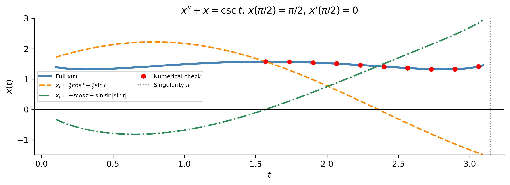

Variation of Parameters
MATH 341 — Notes 5
Goals
What We Will Cover Today
Variable-coefficient ODEs — when undetermined coefficients fails
Derivation of the variation of parameters formula
The Wronskian and Abel’s identity
Step-by-step algorithm with four worked examples:
- \(x''+x=\sec t\)
- \(x''-2x'+x=e^t/t\) (repeated eigenvalue)
- Euler equation \(t^2x''-2tx'+2x=t^3\sin t\)
- \(x''+x=\csc t\)
Note
Section 2.4.2 of Logan (2015).
When UC Fails
The Standard-Form ODE and its Limits
Second-order linear ODE in standard form: \[x'' + P(t)\,x' + Q(t)\,x = g(t)\]
General solution: \(x = x_h + x_p\), where \(x_h = C_1 x_1 + C_2 x_2\).
. . .
Method of undetermined coefficients works when:
- ODE has constant coefficients, AND
- \(g(t)\) is a polynomial, exponential, \(\sin\), \(\cos\), or product thereof
. . .
Fails for ANY of these forcing functions — even with constant coefficients:
| Forcing \(g(t)\) | Problem |
|---|---|
| \(\sec t\), \(\tan t\), \(\csc t\) | Not in the guess table |
| \(\ln t\), \(\sqrt{t}\), \(1/t\) | Not differentiable-family closed |
| \(e^t/t\) | Product of exponential and \(1/t\) |
| Variable coefficients | No exponential \(x_h\) to compare to |
Variation of parameters handles all of these.
Derivation
The Key Idea
Given \(x_1\), \(x_2\) linearly independent solutions of \(x''+Px'+Qx=0\), seek: \[x_p(t) = u_1(t)\,x_1(t) + u_2(t)\,x_2(t)\]
Allow the constants to vary — hence the name.
. . .
Differentiate and impose the side condition \(u_1'x_1 + u_2'x_2 = 0\):
\[x_p' = u_1 x_1' + u_2 x_2', \qquad x_p'' = u_1'x_1' + u_1 x_1'' + u_2'x_2' + u_2 x_2''\]
. . .
Substitute into the ODE; use \(x_1, x_2\) satisfy the homogeneous equation:
\[u_1'x_1' + u_2'x_2' = g(t)\]
. . .
This gives the \(2\times 2\) linear system: \[\begin{pmatrix} x_1 & x_2 \\ x_1' & x_2'\end{pmatrix} \begin{pmatrix}u_1'\\u_2'\end{pmatrix} = \begin{pmatrix}0\\g\end{pmatrix}\]
The Wronskian and the Formula
The coefficient matrix determinant is the Wronskian: \[W(x_1,x_2) = x_1 x_2' - x_2 x_1' \neq 0 \quad(\text{since } x_1,x_2 \text{ linearly independent})\]
. . .
Cramer’s rule gives: \[u_1' = -\frac{x_2\,g}{W}, \qquad u_2' = \frac{x_1\,g}{W}\]
ImportantVariation of Parameters Formula
\[\boxed{x_p = -x_1\int\frac{x_2\,g}{W}\,dt \;+\; x_2\int\frac{x_1\,g}{W}\,dt}\] General solution: \(x = C_1 x_1 + C_2 x_2 + x_p\)
. . .
Abel’s identity: \(W(t) = W(t_0)\exp\!\left(-\int_{t_0}^t P(s)\,ds\right)\) — the Wronskian never changes sign on the interval.
The Four-Step Algorithm
ImportantAlgorithm
- Standard form: write \(x''+P(t)x'+Q(t)x = g(t)\)
- Find \(x_1\), \(x_2\): solve the homogeneous equation
- Wronskian: \(W = x_1 x_2' - x_2 x_1'\)
- Compute: \(u_1' = -x_2 g/W\), \(\;u_2' = x_1 g/W\); then integrate
- Assemble: \(x_p = u_1 x_1 + u_2 x_2\)
- General solution: \(x = C_1 x_1 + C_2 x_2 + x_p\)
Example 1
\(x''+x=\sec t\)
\(g(t)=\sec t\) — outside the UC table.
. . .
Homogeneous \(x''+x=0\): \(\lambda=\pm i\) \[x_1=\cos t, \quad x_2=\sin t, \quad W=\cos^2 t+\sin^2 t=1\]
. . .
\[u_1'=-\sin t\cdot\sec t=-\tan t \;\Rightarrow\; u_1=\ln|\cos t|\] \[u_2'=\cos t\cdot\sec t=1 \;\Rightarrow\; u_2=t\]
. . .
\[x_p = \cos t\ln|\cos t| + t\sin t\]
\[\boxed{x(t) = C_1\cos t + C_2\sin t + \cos t\ln|\cos t| + t\sin t}\]
Valid on \((-\pi/2,\,\pi/2)\) (and any interval between singularities of \(\sec t\)).
. . .
Note
The \(t\sin t\) term grows linearly — like resonance, even though \(\omega=1\) and the forcing \(\sec t\) is not a pure sinusoid.
Example 1 — Solution Plot
Example 2
\(x''-2x'+x=e^t/t\) — Repeated Eigenvalue
Repeated eigenvalue \(\lambda=1\): \(x_1=e^t\), \(x_2=te^t\).
\(g(t)=e^t/t\) — the \(1/t\) factor takes it outside the UC table.
. . .
Wronskian: \[W = e^t(e^t+te^t)-te^t\cdot e^t = e^{2t}+te^{2t}-te^{2t} = e^{2t}\]
. . .
\[u_1' = -\frac{te^t\cdot(e^t/t)}{e^{2t}} = -1 \;\Rightarrow\; u_1=-t\]
\[u_2' = \frac{e^t\cdot(e^t/t)}{e^{2t}} = \frac{1}{t} \;\Rightarrow\; u_2=\ln t\]
. . .
\[x_p = e^t(-t) + te^t\ln t = te^t(\ln t-1)\]
\[\boxed{x(t) = C_1 e^t + C_2 te^t + te^t(\ln t-1), \quad t>0}\]
Example 2 — Solution Plot

Example 3
Euler Equation: \(t^2x''-2tx'+2x=t^3\sin t\)
Variable-coefficient homogeneous part — Euler–Cauchy equation.
. . .
Standard form (divide by \(t^2\)): \(x''-\frac{2}{t}x'+\frac{2}{t^2}x = t\sin t\)
Homogeneous solutions: try \(x=t^r\): \[r(r-1)-2r+2 = r^2-3r+2=(r-1)(r-2)=0 \;\Rightarrow\; r=1,2\] \[x_1=t, \quad x_2=t^2, \quad W = t\cdot 2t - t^2\cdot 1 = t^2\]
. . .
\[u_1' = -\frac{t^2\cdot t\sin t}{t^2} = -t\sin t \;\Rightarrow\; u_1 = t\cos t-\sin t\] \[u_2' = \frac{t\cdot t\sin t}{t^2} = \sin t \;\Rightarrow\; u_2 = -\cos t\]
. . .
\[x_p = t(t\cos t-\sin t)+t^2(-\cos t) = t^2\cos t - t\sin t - t^2\cos t = -t\sin t\]
\[\boxed{x(t) = C_1 t + C_2 t^2 - t\sin t}\]
Example 3 — Solution Plot

Note
The homogeneous solutions are powers \(t\) and \(t^2\), not exponentials — the signature of a variable-coefficient (Euler) equation.
Example 4
\(x''+x=\csc t\)
Same homogeneous equation as Example 1; different forcing.
\[x_1=\cos t, \quad x_2=\sin t, \quad W=1\]
. . .
\[u_1' = -\sin t\cdot\csc t = -1 \;\Rightarrow\; u_1=-t\]
\[u_2' = \cos t\cdot\csc t = \cot t \;\Rightarrow\; u_2 = \ln|\sin t|\]
. . .
\[x_p = \cos t(-t) + \sin t\ln|\sin t| = -t\cos t + \sin t\ln|\sin t|\]
\[\boxed{x(t) = C_1\cos t + C_2\sin t - t\cos t + \sin t\ln|\sin t|}\]
Valid on \((0,\pi)\), \((\pi,2\pi)\), etc. (between singularities of \(\csc t\)).
. . .
Tip
Compare Examples 1 and 4: both use \(x_1=\cos t\), \(x_2=\sin t\), \(W=1\). The only difference is \(g(t)\) — \(\sec t\) vs. \(\csc t\) — leading to qualitatively different \(x_p\). The method is identical; only the integrals change.
Example 4 — Solution Plot

Summary
The Four Examples at a Glance
| Example | \(x_1\), \(x_2\) | \(W\) | \(x_p\) | Key feature |
|---|---|---|---|---|
| \(x''+x=\sec t\) | \(\cos t\), \(\sin t\) | \(1\) | \(\cos t\ln|\cos t|+t\sin t\) | Growth like \(t\sin t\) |
| \(x''-2x'+x=e^t/t\) | \(e^t\), \(te^t\) | \(e^{2t}\) | \(te^t(\ln t-1)\) | Repeated \(\lambda\); \(\ln t\) |
| \(t^2x''-2tx'+2x=t^3\sin t\) | \(t\), \(t^2\) | \(t^2\) | \(-t\sin t\) | Power-law \(x_h\) |
| \(x''+x=\csc t\) | \(\cos t\), \(\sin t\) | \(1\) | \(-t\cos t+\sin t\ln|\sin t|\) | \(\ln|\sin t|\) term |
Key Takeaways
Variation of parameters applies to any second-order linear ODE in standard form — constant or variable coefficients, any continuous \(g(t)\).
The side condition \(u_1'x_1+u_2'x_2=0\) is what makes the system solvable and keeps the algebra manageable.
The Wronskian \(W=x_1 x_2'-x_2 x_1'\) is the key quantity — it must be non-zero on the interval (guaranteed by linear independence of \(x_1\), \(x_2\)).
Forcing functions outside the UC table (\(\sec t\), \(\csc t\), \(1/t\), \(\ln t\), etc.) lead to non-elementary integrals — but SymPy handles them automatically.
For Euler equations, the homogeneous solutions are powers \(t^r\) rather than exponentials; variation of parameters proceeds identically once \(x_1\), \(x_2\) are found.
. . .
Tip
When to use VoP: any time undetermined coefficients fails — either because \(g(t)\) is outside the guess table, or because the ODE has variable coefficients. Always try undetermined coefficients first (it’s faster) and fall back to variation of parameters when needed.
References
Logan, J David. 2015. A First Course in Differential Equations Third Edition.